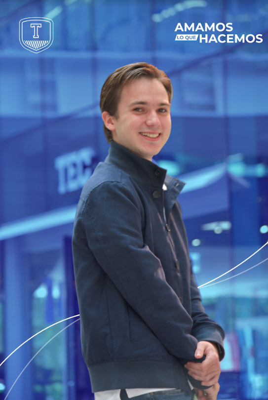
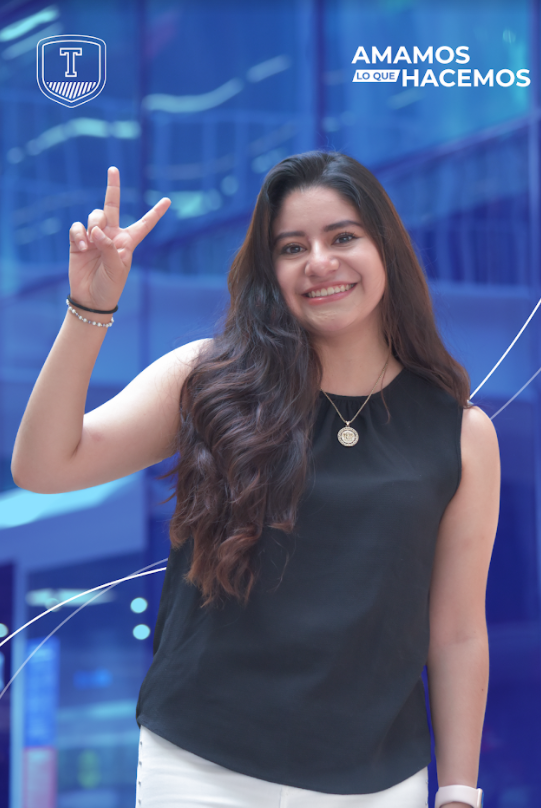
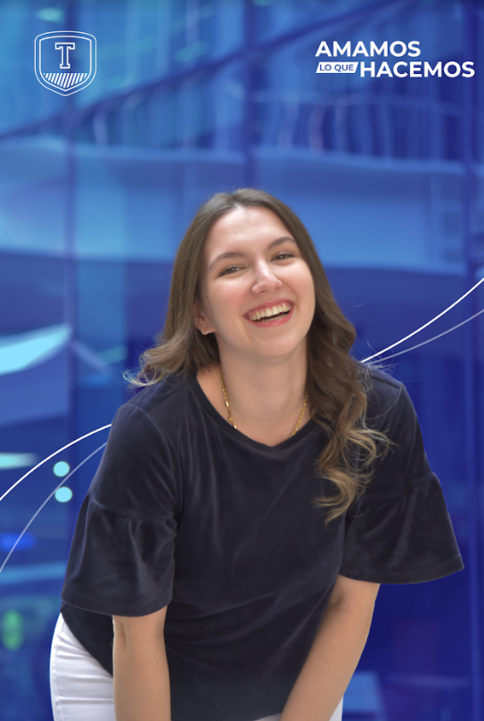
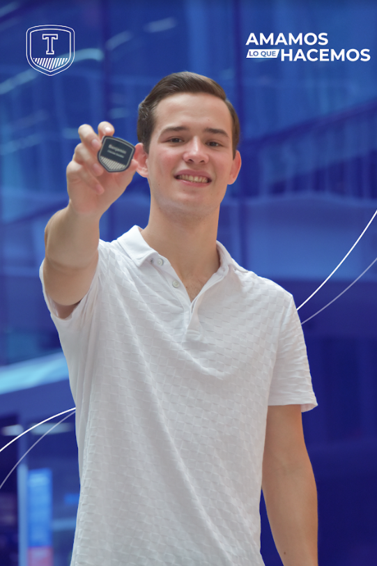
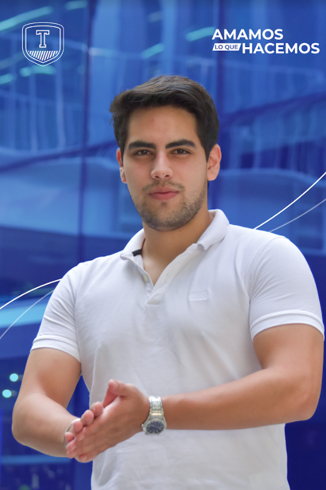
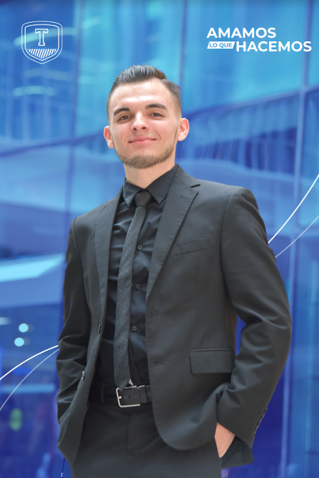
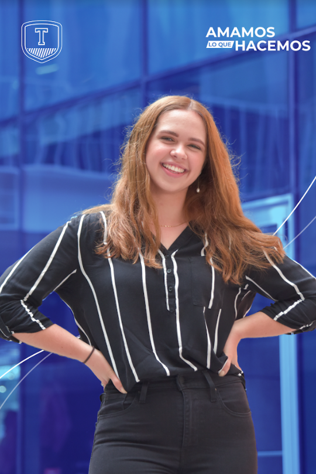
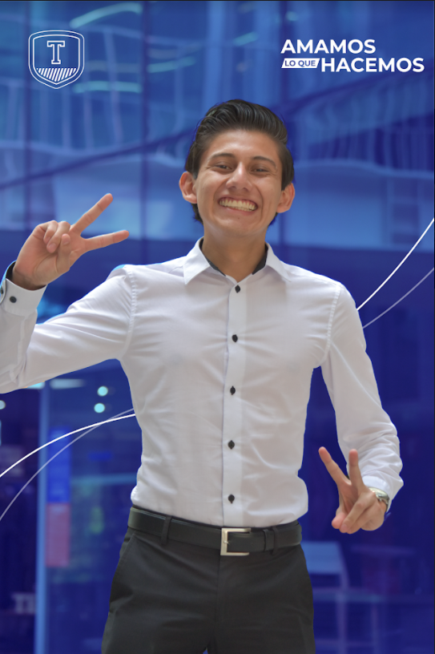
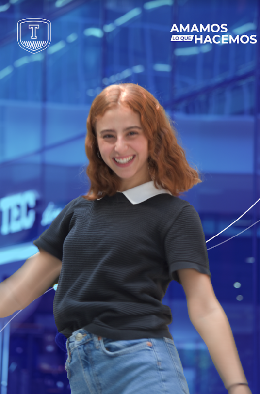
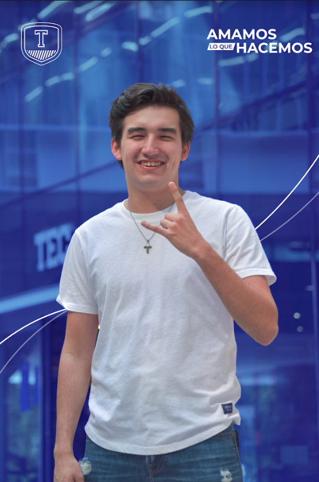

Compartimos los valores y vivencias de un alumno en el Tec.
Comunicamos de manera eficaz y empática nuestras experiencias, acompañando a los
futuros alumnos en una de las decisiones más importantes de su vida. Queremos conocerte
y apoyarte en este camino para que como nosotros te unas a la comunidad Tec.
Historia
Desde el 2015, en el Programa Embajadores Tec hemos recorrido una trayectoria
llena de retos, en el proceso procuramos divertirnos y enfrentar las oportunidades que se nos
presentan, oportunidades que nos han hecho crecer como personas y que nos confirman el gran orgullo
de ser Embajadores del Tecnológico de Monterrey.
Me gustan muchos todos los deportes tanto verlos como practicarlos. Me gusta también apostar por diversión. Me gusta mucho jugar cartas y agregarle dinero para agregarle sabor como poker o blackjack. Me gusta también salir y pasarla bien con mis amigos. Me gusta tomar de todo. Ej. cerveza, ron, whisky, tequila. Me gusta mucho ir a los juegos de los Tigres y también a las cajas de bateo a jugar beisbol. Me gusta mucho la tecnología. Me gusta cantar y tener conciertos ficticios en mi casa.
Habilidades
Me considero muy bueno jugando a los deportes y en los videojuegos en general. Creo que son dos cosas que se me dan muy bien. Creo que también tengo la habilidad de poder hacer una amistad con una persona cualquiera y sacar plática. Creo que una habilidad que tengo es encontrar lo mejor producto tomando en cuenta muchos aspectos como costo, calidad, diseño. Mis amigos siempre me pedían ayuda a buscar de encontrarles el mejor headset, laptop, celular etc. Otra habilidad que tengo es que me gusta cantar y soy bueno.
Logros de preparatoria
Gané junto con otros 2 compañeros el concurso regional de Matemáticas. Fuimos la primer escuela de Ciudad Acuña en toda la historia en ganar el concurso. También tuve el promedio más alto cuando me gradué.
Experiencia LiFE
Llevo dos ediciones de raíces. La primera fue en línea donde tuvimos clases de canto y grabábamos material para que después se subiera a redes sociales. Y mi última edición, Raíces La Lotería donde pudimos presentarnos en el auditorio Luis Elizondo.
Liderazgo y vivencia
Duré un año participando en la Asociación Estudiantil de Coahuila. Tuve experiencia como colaborador, coordinador y director en el área de Finanzas.
Certificaciones, diplomas y cursos
Certificación QPR
Experiencia profesional
Proyectos destacados
Servicio social y voluntariado
Dentro de la AECOAH fui participante de Coahuila Unido, el programa más grande de servicio social y voluntariado a nivel de asociaciones estudiantiles donde cada fin de semana visitábamos hospitales a regalar comida, hacíamos limpiezas de terrenos, realizábamos para recaudar fondos y regalar listas escolares a niños de escasos recursos, apoyos a asilos y participante en el programa creando sonrisas donde se visitaba a niños a hospitales para pasar un rato con ellos.
Liderazgo, trabajo en equipo, organización, responsabilidad, sociabilidad , resiliencia, creatividad, pensamiento crítico, resolución de problemas, solidaridad, productividad, iniciativa y comunicación efectiva
Logros de preparatoria
Estola, Cordón y Medalla Integral de Arte y Cultura generación 2020
Experiencia LiFE
- Espectáculos JAM (80's y Timbiriche)
- Comedia Musicales(High School Musical, School of Rock y Grease)
- 3 Festivales de la canción (3 Locales, 2 Regionales y 1 Nacional)
- Representativo Local de Fútbol Soccer (CEGL)
Liderazgo y vivencia
Coordinador de Arte y Cultura de la Sociedad de Alumnos Prepa Tec 19-20 (SAPREPA CEGL)
Certificaciones, diplomas y cursos
- Diplomado en Desarrollo Sustentable ("Designing the World's Future: The UN Sustainable Development Goals") impartido por el convenio entre Maryland University y el ITESM.
- Certificación en QPR Suicide Prevention Gatekeeper Program.
Experiencia profesional
Practicante en ingenería en Koltek
Proyectos destacados
MÉTODOS OPERATIVOS DE TRABAJO (Koltek) : Identificación y documentación de procesos en los sistemas hidráulicos contra incendios a través de Manuales Operativos de Trabajo para obtener el tiempo de mano de obra de un proyecto, permitiendo una finalidad útil y flexible en sectores de ventas, contabilidad, administración, seguridad y proyectos de obra civil.
Servicio social y voluntariado
Alejandro Alvarez
Ciencias Sociales

LEC 2º Semestre
Economía, Historia, Deportes, Arte, Música, Cultura, Política
Relaciones públicas, resiliencia, colaboración, servicio social, deportes (cinta negra en Tae Kwon Do y ex miembro del equipo representativo de Fútbol), Debate, Organización
Logros de preparatoria
- Reconocimiento como Embajador TEC de Campus Santa Catarina. 2020-2021.
- Beca de Liderazgo del 40% en PrepaTec CSC 2018-Actual.
- Publicación de artículo personal en el libro "Historias del Buen Ciudadano Vol. 4" por la organización Líderes Ciudadanos en Pro de la Cultura de la Legalidad (Págs. 33-34), 2018.
- Ganador del congreso Sinergia que como premio da invitación a la Cumbre Nacional de Liderazgo del Tec (CNL) 2019.
- Premio al mejor Filme; Congreso Filmmaker 2019.
- Nominación para formar parte del programa Embajadores TEC (2019 y 2020).
- Finalista del Congreso APEC edición 2019 Preparatorias.
- Reconocimiento como representante de Campus Santa Catarina en el Secretariado de MUNMX Región Norte 2020.
Experiencia LiFE
- Audición a CSC Idol con mi banda "May Day" (2019)
- Participación en CSC Idol como Solista (2020)
- Parte del Equipo Representativo Fútbol (Diem) (2018)
- Capitán del equipo representativo de Fútbol para alumnos Primer Semestre (2018-2019)
- Campeón de la copa Rayados organizado en Houston (2018)
- Jugador de la selección de Fútbol Santa Catarina (2019-2021)
Liderazgo y vivencia
- Miembro fundador y parte de la Mesa Directiva (Finanzas 2019-2020, Capital Humano 2020-Actual) del Congreso Inter-prepas “Global Leaders” y “Global Leaders Diplomatic Challenge”
- Miembro de la Mesa Directiva de “SACBÉ” (Finanzas 2019-Actual), primera generación en CSC, congreso que busca la formación y el crecimiento de niños en escuelas de gobierno, apoyando su educación y fomentando valores a través de dinámicas de liderazgo.
- Miembro del Secretariado de MUNMX Región Norte 2020 (Secretario de Logística y Atención al Delegado, Representante
de CSC).
- Miembro de la Mesa Directiva del Club de Robótica Cyberius (Acción por México 2018-2019).
- Sinergia: Participante Inter-Prepas (Acreedor a CNL) 2019.
- F1RST: Imagen de equipo 2019.
- Filmmaker: Participante (Premio al Mejor Filme) 2019.
- Roads: Staff Guía de Equipo 2019, Staff Logístico 2020.
- FELC: Participante 2019.
- APEC: Participante (Finalista) 2019.
- Cocinatec: Participante 2019.
- CAM: Participante en Actividades Grals. 2019 -2020.
- FEM: Participante en Juntas y Conferencias 2020.
- Embajadores Tec: Pláticas y Conferenecias 2020-Act.
Certificaciones, diplomas y cursos
Experiencia profesional
Miembro fundador y "Diseñador de Imagen Corporativa, Medios Audiovisuales, Interacción de Redes Sociales y Página de Internet"
de DALYA, promotoría de planes de protección y patrimonio. (2020-Actual)
Proyectos destacados
Graduación del progrma CIT (Counselors in Training) por la American Camp Assosiation dentro de Camp Mishawaka en Grand Rapids, Minnesota. Este reconocimiento da oportunidad a trabajar como staff capacitado en cualquier campo de verano en Estados Unidos dentro de la Asosiación a partir del 2021. (Graduado en 2019)
Servicio social y voluntariado
- Visitas cada invierno desde 2012 ininterrumpidamente a la comunidad de "Los Tiraderos", en el lecho del Arrollo del Obispo donde se organiza una posada al igual que una recolecta de ropa, juguetes y en algunas ocasiones con brigadas médicas para repartir.
- Visitas cada invierno desde 2018 a las comunidades de "La Alianza" en Monterrey y a Juárez, Nuevo Léon, con la fundación “Enrique Yturria García” donde se organiza una entrega de despensas, cenas navideñas y bienes para repartir.
- Miembro de la Mesa Directiva del congreso Sacbé (primera generación en CSC); congreso que se enfoca en la educación y crecimiento de niños de primaria y secundaria en escuelas públicas, siguiendo su desarrollo mediante dinámicas de Liderazgo.
- Apoyo en la "Semana de La Prevención" de AMASFAC donde se dan pláticas y conferencias en la escuela primaria “Prof. Alfredo Solís Elizondo” acerca de lo importante que es la prevención de riesgos y accidentes al igual que formar un desarrollo saludable de vida.
- Staff del congreso Limitless como Orientador, donde se trata con el grupo Unidos, trabajando por una inclusión social para las personas con discapacidad.
- Visitas con el Grupo Faith al hospital Universitario para convivir y ejecutar dinámicas planeadas para niños de primaria y kinder que padecen de Cáncer.
Allison Hernandez
Ingeniería y Ciencias

IMD 7º Semestre
Ingeniería Biomédica, Ciencias de la Salud y Emprendimiento
Creatividad e Innovación, Comunicación Efectiva, Pensamiento crítico, Trabajo colaborativo, Autogestión, Liderazgo, Gestión de Proyectos, Resolución de problemas
Logros de preparatoria
- Primer Lugar en FIRST Robotics (Regional de Toluca, Regional de Monterrey 2017)
- Programa Embajadores Tec 3era y 4ta Generación
- Ganadora del Hack n’ Jam 2017 creando una app para ayudar con el sismo de la cdmx
Experiencia LiFE
Soccer en equipo representativo durante mi primer año
Liderazgo y vivencia
- Presidenta del equipo de Robótica TECBOT 3158 para la competencia FIRST Robotics
- Coordinadora de TOLMUN
Certificaciones, diplomas y cursos
- Entrepreneurship and innovation Bond University: Experiencia internacional en Gold Coast, Australia.
- YOUTH EDUCATION SERIES: The Walt Disney Company - Orlando, Florida, USA.
Experiencia profesional
- DESARROLLO DE DISPOSITIVOS MÉDICOS
Creación de dispositivos médicos desde cero Tecnológico de Monterrey · 2021
He desarrollado un electrocardiógrafo con bioinstrumentación analógica.
Creamos MONBO un gafete de monitoreo de signos vitales (temperatura y frecuencia cardiaca) para pacientes post-Covid19 con bioinstrumentación digital y analógica para evitar la saturación de hospitales en Monterrey, Nuevo León.
Creamos B·TRACK un audífono para el monitoreo de pacientes post- Covid19 en adultos de 45 a 60 años (temperatura, frecuencia cardiaca, saturación de oxígeno y frecuencia respiratoria).
- PROTOCOLO DE RECONVERSIÓN DEL HOSPITAL SAN JOSÉ
Hospital San José Tecnológico de Monterrey · 2021
Se creó un protocolo y estrategia de reconversión de salas quirúrgicas a cubículos de cuidados intensivos para pacientes con y sin Covid-19, de acuerdo a los estándares, normas y recomendaciones, con la validación de la líder de Ingeniería Biomédica en TecSalud.
- SAIMD SOCIEDAD DE ALUMNOS DE INGENIERÍA BIOMÉDICA
Directora de Mercadotecnia e Imagen · 2021
- BMES · BIOMEDICAL ENGINEERING SOCIETY CAPÍTULO ESTUDIANTIL TEC DE MONTERREY
Coordinadora General · 2021
Proyectos destacados
- CONGRESO JOURNEY2INNOVATION
Conferencista "Inteligencia Artificial para la detección de Trombosis Venosa Profunda" · 2021
- SONNER TECH
CEO StartUp de tecnología médica · Software para el diagnóstico de coágulos en la vena femoral · 2021
- Primer Lugar - BIOENETIX International Biomedical Engineering Hackathon
BMES Biomedical Engineering Society - 2021
- Incubadora de Empresas del Tecnológico de Monterrey
TecLean - Zona Ei
- Primer Lugar - Reto Actúa
Tecnológico de Monterrey
- Nominación al Premio Liderazgo Transformador
Categoría de Innovación Social
- Primer Lugar - BIOHACK International Biomedical Engineering Hackathon
IEEE/EMB Tecnológico de Monterrey
Ciudad de México
- Presidenta Grupo Estudiantil "Alliance" PrepaTec Eugenio Garza Sada 2018 -2019
Certificaciones, diplomas y cursos
- Certificación Primeros Auxilios 2020 por Cruz Roja
- Certificación DELF B1
- Certificación TOEFL B2
Experiencia profesional
- SAMO: Sociedad de alumnos Médico Cirujano Odontólogo
Vicepresidenta de Sociedad de Alumnos
- Clínica Quattro Dental: - Auxiliar de clínica dental
enero de 2021 - septiembre de 2021 (9 meses) San Pedro Garza García, Nuevo León, México
Asistente en consulta y tratamientos odontológicos en las áreas de endodoncia, prostodoncia y periodoncia.
- Zona de Emprendimiento Innovador:
Líder de CROWD Shero marzo de 2020 - agosto de 2021 (1 año 6 meses)
Líder estudiante responsable de la promoción y difusión de eventos y convocatorias relacionadas a emprendimiento en el grupo de mujeres emprendedoras Shero.
- Juvelo.mx: Cofundador - enero de 2020 - 2021 (1 año)
Proyectos destacados
- Proyecto de vinculación ULead con enfoque en medicina: Manual para egresados en el área de odontología "Atención integral en el adulto mayor"
- Vicepresidenta Sociedad de Alumnos Médico Cirujano Odontólogo 2021-2022
- Subcoordinadora general y Coordinadora de Contenido "ODONTALKS 2022"
- Embajadora Zona Emprendimiento Innovador Enero 2020 - Agosto 2021
- Líder de Odontología en Meditec 2020
- "Niño Feliz A.C" Líder de equipo en Hospital San José: Enero-Mayo 2019
Niño Feliz A.C
Programa enfocado en pacientes pediátricos en el cual por medio del juego terapéutico se espera mejorar la estancia del paciente en el hospital. Desde Sept. 2020 - actualidad:
- Líder de equipo en Hospital San José Enero-Mayo 2019
- Voluntaria en Hospital San José Enero-Mayo 2019
Angela Mora
Salud

LNB 6º Semestre
Nutrición clínica (pediátrica, en el adulto mayor, oncológica, gestacional y en la mujer)
Español (Nativo) Inglés (B2) Francés (B1) Alemán (Básico)
Hobbies
Bailar, cocinar, salir a caminar y isitar cafés
Habilidades
Trabajo en equipo, escucha activa, liderazgo, pasión por la salud de los demás, cocina saludable
Logros de preparatoria
Presidenta Fearless 2018-2019. Premio LIFE por distinción en grupos estudiantiles. Viaje a CDMX a Carnero Nacional. Viaje a Torreón, COAH para implementar congresos en Prepa Tec.
Experiencia LiFE
Liderazgo y vivencia
Certificaciones, diplomas y cursos
Experiencia profesional
Desde primer semestre entré a grupos estudiantiles por lo que he tenido que establecer tiempos para encontrar un balance en ello mismo, en donde pueda tener tiempo de estudio, personal y extracurricular. Me encanta poder idear en mi salón de clases futuros proyectos e ideas que ahora son sueños. Así mismo, soy una persona muy creativa lo que me llevó a hacer mi propia cuenta de instagram sobre Nutrición y Bienestar en la vida común desde mi día a día - @vidasana.am
Proyectos destacados
- Meditec, NutreTec, entre otros.
- Directora de Marketing y Comunicación en Feed Your Brain 2020 (el primer congreso internacional en línea del Tec).
- Directora de Proyectos SALNB 2020-2021 y Presidenta SALNB 2021-2022.
Servicio social y voluntariado
Actualmente en el semestre Ago-Dic 2021 estoy colaborando en NAFI, Nutrición y Actividad Física Infantil, en donde estoy en contacto con niños de 4-8 años para promover un estilo de vida saludable desde la infancia
Benjamin De La Garza
Ciencias Sociales

Economía 7º Semestre
Economía Digital, Consultoría, Finanzas, Gestión de Recursos Públicos
Estar involucrado en actividades de liderazgo, gobierno estudiantil, hacer todo tipo de deportes, principalmente futbol, basket y gym, escuchar podcasts y ver películas
Habilidades
Trabajo bajo presión, Comunicación efectiva, Gestión de Equipos, Creatividad y Social Skills
Logros de preparatoria
- Graduado del Bachillerato Internacional
- Estola de Liderazgo,
- Certificado Nacional de Liderazgo por el programa Carnero
- Presidente de Carnero Región Monterrey
- Vicepresidente del Comité de Participación Estudiantil
- Finalista en el Regional de Basket zona Monterrey.
Experiencia LiFE
Estar en el equipo de futbol en el primer año y en el equipo de basket en el último semestre de mi carrera.
Liderazgo y vivencia
- Presidente de Carnero Local para las 5 prepas Tec en Monetrrey
- Graduado como Alfa en Carnero Nacional
- Coordinador del grupo estudiantil Techo
- Vicepresidente del Comité de Participación Estudiantil
- Parte del gobierno estudiantil
- Participación como staff en más de 30 eventos de liderazgo.
Certificaciones, diplomas y cursos
- Certificado de Bachillerato Internacional (29 puntos)
- Curso de Lengua Francés en la Universidad de Cannes
- Alfa de Carnero Nacional
Experiencia profesional
Llevo trabajando casi 1 año en el área de Finanzas dentro de Planeación Estratégica para la empresa LAMOSA, en donde mi principal encargo es el análisis de los Estados Financiero y la evaluación de la rentabilidad, así como ver un poco el tema de créditos/préstamos.
Proyectos destacados
El más grande proyecto a lo largo de mi carrera fue mi presidencia en la Sociedad de Alumnos de Economía, ya que involucra un reto enorme de trabajar con un equipo de más de 30 personas, realizar cerca de 2 eventos por mes, emprender un proyecto de servicio social y a la par, manejar unas finanzas sanas para lograr becar alumnos de la carrera. También coordine el primer Hi!Tec de transmisión nacional, que es el evento donde se le da la bienvenida a cerca de 16,000 estudiantes que entran año tras año. Finalmente, el organizar el Simposio de mi Carrera, un evento destinado a más de 16 países con más de 20,000 oyentes.
Servicio social y voluntariado
Fui coordinador de UNIDOS, un grupo enfocado a la inclusión de personas con discapacidad, donde estaba a cargo del programa JR. que es para aquellos niños entre 4-8 años, donde tenía la oportunidad de ver cómo ellos mismos superaban sus capacidades.
RStudio, Tableau, public speaking, redacción y liderazgo
Logros de preparatoria
" - XXV Copa Amistad Lic. Rey. Garrido, Gimnasia, 3er. Lugar (2017)
- Distrito educativo 15-04, olimpíadas de ortografía, 2do. Lugar (2015)
- Copa San Judas Tadeo, Volleyball, Mejor Defensa (2019)
Grand Prix Volleyball, 3er. Lugar (2019)"
Experiencia LiFE
Yoga, Voleibol intermedio I, y Voleibol intermedio II
Liderazgo y vivencia
Coordiandora de redes sociales de AECA, actual presidenta de AECA, peermentor por dos años en Krei, integrante del cómite de Apoyo a Alumno y también en el de Marketing en el consejo de Krei
Certificaciones, diplomas y cursos
"- AP Spanish Language and Culture
- AP Microeconomics
- AP Spanish Literature and Culture
- Certificación de Adobe Photoshop (2018)
- Convenio FRISA y Tec de Monterrey, bloque ideación y prototipado, 3er. Lugar (2020)
- Constancia del Conscious Business Center, Semana Tec de Transformar para trascender (2021)
- Capacitación de primeros auxilios psicológicos (2020)"
Experiencia profesional
"- Pasantía en RRHH en el Colegio Bilingüe New Horizons: Trabajé como asistente, haciendo citas, pidiendo referencias, corrigiendo exámenes, etc. (2018)
- Tutora independiente: Tutora de matemáticas, química y programación básica (2016 - 2019)
- Interna en Manzara: Investigación de mercado variables cualitativas y cuantitativas, creación de presentaciones ejecutivas, evaluación de focus group, etc. (2021 - 2021)"
Proyectos destacados
Servicio social y voluntariado
He trabajo en con Guerreros, proyecto para ayudar a jóvenes en situaciones vulnerables a recrearse y buscando que no dejen sus estudios, con QuieroChambaYa fundación que busca ayudar a los jóvenes a introducirse correctamente en el mundo profesional, ayude haciendo conferencias para recolectar dinero para becas, trabajé con la Cruz Roja al crear tableros dinámicos para ayudarlos a mejorar el servicio al cliente y trabajé con Instituto Nuevo Amanecer haciendo propuestas de negocios para ayudar a mejorar su negocio de terapia acuática y clases durante la pandemia. En el colegio estuve en Grupo Estrella, grupo de servicio comunitario que ayudaba en diferentes tipos de servicios ambientales y humanitarios.
Emilio Auz
Negocios

LAEt 9º Semestre
Economía y Finanzas, Marketing, Administración, Emprendimiento, Real Estate, Ética, Política y Filosofía, Crecimiento Integral y Tecnología
Deporte, lectura académica e investigación, fotografía y creación de piezas audiovisuales, música (guitarra y canto), ciencia y tecnología
Habilidades
Culturalmente asociable, oratoria y comunicación en público, planeación y organización estratégica, liderazgo y motivación, adaptabilidad al cambio, consultoria técnica, optimización de procesos, negociador, visión global, innovación y contienda al Status Quo
Logros de preparatoria
- Selección representativa de fútbol (Premio a mejor jugador del torneo QISSA 2018)
- Organización y manejo de logística Modelo Naciones Unidas CAENU 2017
(Reconocimiento a mejor staff)
- Consejo Estudiantil en 3 ocasiones para áreas de tesoreria, organización de eventos e imagen pública
Experiencia LiFE
- Técnica Vocal (Participación en eventos de coro y solista)
- Grupo estudiantil: Vocal Nation (Campus Monterrey)"
- Fútbol y torneo intramuros (mejor posición en torneo 4tos de final).
Liderazgo y vivencia
Apoyo y vivencia de evento INC Mty lationamérica
Certificaciones, diplomas y cursos
- Diploma Bachillerato Internacional (Destacada participación en Economia y Gestión Empresarial)
- Babson College: Certificación en Entrepreneurial Operations: Launching a Startup
- Yale University: Certificación en Financial Markets
- Boston Consulting Group / University of Virginia: Certificación en Digital Transformation
Experiencia profesional
- Business Development Intern / quickGrowth Ecosystem Builder - IXL Center (Boston, MA, Estados Unidos) 2021 - Actualidad: - Trabajando con consultores de negocio de todo el mundo en el área estratégica para PYMES con el objetivo de ayudarles a mejorar su negocio utilizando la plataforma quickGrowth.
- Cofounder Borboleta Digital Agency 2021 (Marketing Digital):
- Creación de la marca, posicionamiento en el mercado, captación de clientes, contabilidad, evaluación del proyecto, establecimiento de costos, captación de talento, diseño y creación de contenido, trato con proveedores, ventas.
Emprendimiento - Riet & Co. Ecuador 2020 - 2021 (Industria de moda):
- Creación de branding, planificación estratégica, ventas, posicionamiento de marca, trato con proveedores, contabilidad, evaluación de proyecto, organización de la cadena de suministro y logística.
- Área de ventas y marketing, Construcare Ecuador 2018 - 2019 (Industria de construcción):
- Ventas y cotizaciones de servicio de impermeabilización en bienes inmuebles
- Promoción de contenido digital, videos promocionales y fotografía
- Digital marketing intern, Ecoline Wash Ecuador 2018 (Febrero-Junio) (Industria de servicios de desinfección de transportes y maquinaria)
- Prácticas profesionales; Promoción de contenido digital: videos promocionales y
fotografía
Proyectos destacados
- Ganador cueva de lobos y concurso de emprendimiento mediante la generación de idea de Startup tecnológica (Campus Querétaro 2019)
- Asesoramiento estratégico modelo de negocio de fabricadora y comercializadora de velas (Empresa Holandesa 2020)
- Inversiones en instrumentos de renta variable en mercados bursátil BMV y NYSE (México y Estados Unidos)
Servicio social y voluntariado
Voluntariado Olimpiadas Especiales Ecuador 2017 - 2018:
- Apoyo e inducción de actividades deportivas a personas con discapacidades
Proyecto 99 México 2020 - 2021:
- Coordinador de creación y desarrollo de imagen
- Coordinador de redes sociales
- Profesor de Inglés
- Creador de video tutoriales de Guitarra
Erick Rodríguez
Ingeniería y Ciencias

Ingeniería en Innovación y Desarrollo 9º Semestre
Innovación, Emprendimiento, Liderazgo, Comunicación, Planeación Estratégica, Relaciones Públicas y Negocios
Actividades:
- Conductor y animador de eventos sociales, empresariales y políticos.
- Socio y embajador de "Voluntario con Maleta": una empresa que, a partir de convenios nacionales e internacionales, otorga becas a jóvenes para vivir experiencias de voluntariado internacional en más de 80 países, además de capacitarlos en emprendimiento y desarrollo profesional.
- Embajador del Programa "Eugenio Garza Sada Global Leadership Program": un programa de liderazgo con la Universidad de Texas y el Tecnológico de Monterrey.
Hobbies:
- Baile y Actuación
- Emprender nuevos proyectos
- Crear experiencias, personajes y juegos en el ramo del entretenimiento
- Leer y capacitarse sobre negocios, innovación, emprendimiento y liderazgo
- Conocer nuevas personas y nuevos lugares"
Habilidades
Liderazgo, comunicación y public Speaking, relaciones públicas y creatividad
Logros de preparatoria
En el ámbito estudiantil, obtuve junto con mi equipo el 1er lugar en el torneo intercolegial del proyecto STEM (Science,Technology, Engineering, Mathematics): una iniciativa donde creamos un modelo que uniera las materias de Biología, Inglés y Química para enseñar y facilitar la comprensión de temas científicos a estudiantes de secundarias públicas y que fue donado a una secundaria de alto rendimiento en el municipio de Santa
Catarina, Nuevo León.
En el ámbito social, durante mi preparatoria comencé mi carrera como emprendedor social fundando mis primeros dos proyectos:
1. DEA Asesorías: “Reescribiendo el mañana, transformando el hoy”. Un proyecto donde junto con mi equipo, impulsamos y apoyamos a 160 jóvenes, con dificultad económica, en temas académicos y de desarrollo personal de la Secundaria #29 Jaime Torres Bodet para prepararlos en la continuación de sus estudios de preparatoria.
2. Campaña “Alianza contra el Cáncer Infantil”- en el CIDEB UANL.
Un proyecto donde unto con mi equipo, logramos recaudar y donar más de 100 trenzas a la Alianza Anticáncer Infantil para la elaboración de pelucas oncológicas para niños con cáncer.
Experiencia LiFE
- Curso de Expresión Corporal. Gracias a este curso descubrí mi pasión por la actuación y despertó en mi un sueño de querer participar algún día en alguna película o serie de cine.
- Curso de Salsa. Aquí descubrí que era muy bueno para bailar otros ritmos más allá de los que dominaba y me di cuenta que compartía un gusto enorme por esta música.
Liderazgo y vivencia
- Durante mi estadía en el Tecnológico de Monterrey también he tenido la oportunidad de desarrollarme en distintos programas y grupos estudiantiles. Gracias a todos ellos, he descubierto mi pasión y amor por el liderazgo, innovación y emprendimiento, además de haberme ayudado a descubrir mi propósito de vida: "convertirme en un agente de cambio que deje huella en la vida de los demás".
Entre los programas que destaco se encuentran los siguientes:
- Eugenio Garza Sada Global Leadership Program.
Embajador y participante de este programa destacado del Tecnológico de Monterrey con la Universidad de Texas sobre liderazgo, desarrollo personal, innovación y resolución de conflictos globales.
- Programa Líderes con Sentido Humano-Tecnológico de Monterrey.
Líder, mentor y auditor de alumnos y proyectos de la Dirección de Servicio Social del Tecnológico de Mty.
- Festival de Emprendimiento INCmty 2019 y 2020
En el año 2019 participé como manager de Customer Service en el Festival de Emprendimiento más grande de Latinoamérica creado por el Tecnológico de Monterrey donde obtuve un reconocimiento como "Manager destacado".
En el año 2020, participé como director de community del grupo de voluntarios. Aquí me encargué de la atracción, capacitación e integración de los 50 voluntarios que nos ayudaron a hacer historia llevando a cabo, por primera vez, INCmty en su modalidad virtual. Atendimos a más de 800 emprendedores, estudiantes y académicos de diversas partes del mundo.
- AIESEC- Capítulo Tec de Monterrey
Encargado de la atracción de talento y relaciones públicas. En este programa colaboré para enviar a compañeros de nuestra institución a vivir una experiencia de voluntariado internacional.
- Grupo Estudiantil “Jóvenes Unidos por Nuevo León” Enero 2019
En este proyecto participé como director de planeación estratégica. Aquí me encargué de construir la visión, valores y plan de trabajo de nuestro grupo y aprendí sobre la importancia del liderazgo y una visión motivadora para lograr grandes resultados en los equipos."
Certificaciones, diplomas y cursos
"- Beca Fundación ZABER
Ganador de una beca del 100% para cursar mis estudios universitarios en el Tecnológico de Monterrey.
- Certificación Internacional P.R.O.T.O.N. (Positive Relationships Open Tangible Opportunities for New Developments)
- Certified Global Cooperation Skills Associate (GCSA)
- Certificado en competencias para trabajar en equipos multiculturales e internacionales avalado por la Unión Europea."
Experiencia profesional
"- Gracias a la bolsa de trabajo del Tecnológico de Monterrey, pude conseguir mi primer oportunidad de desarrollo profesional: una oportunidad con la cual me siento afortunado y considero sumamente valiosa. Desde agosto del 2021 hasta la actualidad, trabajo con una start-up, ubicada en San Francisco, California, de la industria de AgroTech (tecnología aplicada en la industria de la agricultura) llamada Seso, Inc. Aquí me desempeño como practicante de operaciones y apoyo en las siguientes tareas:
1. Desarrollo e implementación de mejoras operativas basados en el análisis de datos e innovación.
2. Trabajo para contribuir a la eficiencia operativa a través del mapeo de procesos e instrucciones
3. Crecer y dar mantenimiento al grupo comunitario de trabajadores agrícolas más grande del país."
Proyectos destacados
"- En los últimos años, he tenido la oportunidad emprender mi primera empresa y participar en una serie de proyectos importantes...
Mi primer empresa...
- “Voluntario con Maleta” Marzo 2021- Actualidad
Co-fundador y socio de la empresa. En este proyecto, a través de un convenio de becas con Vive México y la Unión Europea, impulsamos a jóvenes mexicanos a vivir una experiencia de voluntariado internacional que desarrolle en ellos nuevas competencias e incremente sus oportunidades de emprender un proyecto o acceder a grandes empleos, convirtiéndolos en agentes de cambio social.
- Programa “Maestr@ Virtual”. Diciembre 2020- Actualidad
Co-fundador del programa y asesor. Este proyecto, lo inicié con mi mejor amigo en donde jóvenes brindamos servicios de capacitación en herramientas digitales a más de 100 docentes en el sector educativo público y privado. Recientemente, éste gano una inversión de la Universidad de Harvard por $10,000 dolares para escalarlo en nuestra comunidad, aunque ahora es mi mejor amigo quien lo dirige y ahora solo me desempeño como asesor del mismo.
- METALSA- Reto de Innovación de su Modelo de Negocio. Agosto 2020- Noviembre 2020
Junto a un equipo de alumnos mexicanos y extranjeros, participé en el proceso de investigación, análisis de tendencias y análisis de mercado para la ideación, validación y estructuración de un nuevo e innovador modelo de negocios para METALSA.
- Programa “Jóvenes de Clase Mundial” por Vive México e INJUVE. Julio 2019-Agosto 2019 Seleccionado como embajador de Nuevo León y México para participar en un proyecto de voluntariado social en Estocolmo, Suecia. Este programa, dirigido por Vive México y el INJUVE buscaba la formación intercultural internacional de jóvenes mexicanos en liderazgo, ciudadanía global y emprendimiento."
Servicio social y voluntariado
" A lo largo de mi estadía en la universidad, he tenido la oportunidad de participar en distintas iniciativas que han forjado mi sentido humano, humildad, sentido de agradecimiento, valores y liderazgo social. Entre ellas destaco:
1. Programa Líderes con Sentido Humano. En este proyecto fui líder, mentor y auditor de alumnos y proyectos de la Dirección de Servicio Social del Tecnológico de Mty. Dentro de los tipos de proyectos que trabajé se encuentran los relacionados a inclusión, arte y cultura ,educación y deporte.
2. PaL Sur del Norte. Un proyecto social dirigido por una maestra del Tec de Mty que busca crear iniciativas para trabajar en temas de desempleo, agua, manejo
de residuos, pobreza y educación en el municipio de Mier y Noriega Nuevo León: uno de los más pobres de nuestro estado. Aquí me desempeñé en el equipo de políticas públicas y coordinación de proyectos donde aprendí sobre la disparidad que existe en nuestro estado; la necesidad de, más que asistir a la población, ayudarles tener acceso a mejores oportunidades de educación y empleo para asegurar la sostenibilidad de la comunidad."
Ewa Haduch
Negocios

Bachelor In Global Business 6º Semestre
Negocios Internaiconales, Mercadotecnia, organización de evetos y servicios
Español (Nativo) Polaco (Nativo) Inglés (C1) Alemán (B2)
Hobbies
Grupos estudiantiles (Presidencia de la sociedad de alumnos), Leer, hacer ejercicio (HIIT) y networking.
Habilidades
Planeación estrategica, liderazgo, proactividad, trabajo en equipo, pensamiento critico, servicio al cliente, public speaking y creatividad.
Logros de preparatoria
- Estola de Grupos estudiantiles (Reconocimiento al 10% de alumnos por involucramiento en Grupos Estudiantiles)
- Bachillerato Internacional: Aleman Nivel Medio y Empresas Nivel Superior
- DiplomaTec de Negocios
- Lider con causa generacion 2018
- Promedio: 94
Experiencia LiFE
- 3 años y medio de Salsa y ritmos latinos.
- 2 concursos de interprepas y premios a mejor coreografia de Ritmos Latinos 2017 y 2018 y mejor coreografia de la noche en el 2018.
- Participacion en clases Life de Salsa, ritmos latinos y yoga.
- 2ndo Lugar categoria Basquetbol Femenil en PrepaTec intramuros 2018
- Clases de Abdomen e Indor ciclying en 2019
Liderazgo y vivencia
- Presidenta de la primera Sociedad de Alumnos de Bachelor In Global Business (SABGB) Febrero-Diciembre 2021.
- Premio a Mejor Estudiante de Grupos Estudiantiles en la Gala Borrego 2021.
- Premios de Vinculación y mayor impacto Estudiantil en la Gala fetec Febrero-Junio 2021.
- Capitan de Edificio en HiTec 2021.
- Lider del externo del area de filantropía en la comunidad Krei 2020.
- Coordinadora de Tesorería de la Primera edición de TedxTecDeMTY 2020.
- Colaboradora de Girlup 2020.
- Staff De Seguridad del foro de Equidad de Genero 2019.
- Colabroadora destacada de la SALIN 2019 y 2020.
- Miembro de SDG Hub Tec De Mty 2020.
- Coordinadora de dinámicas de Sacbe y Cambiando Historias en prepa tec Eugenio Garza Lagüera.
Certificaciones, diplomas y cursos
- Student Leaders for the 21st Century (Laspau)
- Marketing Enfocado a la estrategia de Servicios Universidad de Cordoba
- Goethe Zertifikat B1(Aleman).
- Diploma de Negocios (DiplomaTec).
Experiencia profesional
- Embajadores TEC 6ta y 7ma Generación. (1año y medio).
- Trabajo en retos TEC 21 con empresas socio Formadoras como: Tecologias para la Comunidad (Protesis), Munshop (Venta de ropa de segunda mano), Bomesa (snacks), Food Core soluitions, Snickers, Nivea, Lala, Renatta cosmetics, coppel, mks, Frisa.
Proyectos destacados
- 3er Lugar nivel Local del Reto de International Service Development 2021 con el socio Formador Munshop.
- Premio a Mejor estudiante de Grupos Estudiantiles en la Gala borrego 2021.
- 1er Luar del salon en el Reto Export Plan con el socio formador Bombesa.
Servicio social y voluntariado
- 2 semestres trabajando con el Departamento de Servicio Social a traves de Lideres con Sentido Humando, siendo LSH de los proyectos: Fundación Yepez y Lideres Ciudadanos.
- Vountaria activa de Cambiando Historias 2016 - presente.
- Lider con Causa Generacion 2018, participando en el Encuentro nacional de concausa 2018 y en la jornada internacional de Jovenes hacia el 2030 organizada por el Imjuve en Acapulco 2018.
- Participación en concurso internacional de ciencias 2015
Experiencia LiFE
- Dos semestres en clases de canto y formar parte de grupo estudiantil Vocal Nation
- Dos semestres en clases de natación
Liderazgo y vivencia
- Presidente de Sociedad de Alumnos de Nanotecnología y Ciencias Químicas 2019-2020
- Director de Imagen y Mercadotecnia en American Chemical Society Chapter Mty 2018-2019
- Asociación del Estado de Zacatecas 2020-2021
Certificaciones, diplomas y cursos
- Certificación de curso "Quantum Mechanics"
- Intercambio Académico en los Países Bajos
Experiencia profesional
- Estancia de investigación (6 meses) en los Países Bajos en el grupo de investigación de Mesoscale Chemical Systems. Responsable de desarrollar un proyecto de investigación titulado "Additive manufacturing of 3D-architected zirconate perovskite microstructures” en el área de nanomateriales.
- Estancia de investigación corta (1 mes) en CIMAV Unidad Monterrey como pasante del proyecto titulado “Nanolaminados por depósito de capas atómicas de AZO para recubrir fractales en vidrio” en el área de nanomateriales.
Proyectos destacados
Servicio social y voluntariado
- Coordinador del servicio "Taller de Química" durante mi gestión en la sociedad de alumnos
- Voluntariado en programa piloto de "Crececamp MTY" para enseñar a niños con discapacidad intelectual
Josue Cano
Ingeniería y Ciencias

ITC 6º Semestre
Ciencia de Datos, Inteligencia Artificial, emprendimiento y Hablar en Público
Escuchar música, jugar fútbol y emprendimiento social.
Habilidades
Python, C++, Erlang, R, Java, Matlab, SQL, Databases, Git, Linux, Web Development, Android Development, Data Science, Game Development, Public Speaking, Leadership, SCRUM, Product Management, Entrepreneurship.
Logros de preparatoria
- Primer lugar regional en Oratoria (ENAC 2018)
- Segundo lugar estatal en Química (Festival Académico 2018)
- Segundo lugar estatal en expresión oral (Festival Académico 2017)
- Primer lugar regional en Matemáticas (Festival Académico 2019)
- Primer lugar regional (Concurso Nacional de Prototipos 2019)
- Reciclando por la educación (proyecto social para proveer de proyectores a secundarias de comunidades rurales)
- Publicación de: Para Mi Bella Dama (primer libro de lírica)
- Líderes del mañana: beca del 100% para estudios profesionales en el Tec de Monterrey"
Experiencia LiFE
- Oratoria y expresión oral
- Emprendimiento en ZonaEi Monterrey y en Parque Tecnológico Orion.
Liderazgo y vivencia
Top Leader: Fui reconocido por Ternium como el mejor líder de mi clase (más de 60 alumnos) durante el desarrollo del proyecto Tecnium, destacando mis habilidades de liderazgo en proyectos que involucran el desarrollo de software.
Certificaciones, diplomas y cursos
- TrepCamp: diplomado en metodologías ágiles y participación en simulador de emprendimiento internacional mediante la creación de soluciones innovadoras haciendo uso de IA.
- Data Analyst: bootcamp donde se dio seguimiento de la situación del COVID-19 en México. Responsable del análisis de datos con Python, SQL y Tableau. Resultó ser útil para la
Región Sur del estado de Jalisco, manteniéndolos informados (+10,000 personas).
- TakeFlight21: un programa universitario de Twitter global. Inmersión en
programación competitiva con resolución de problemas relacionados a estructuras de datos usando Python.
- Codechella: Hackathon universitario de Twitter global. Desarrollo de un widget para la red social. Responsable de la gestión de datos utilizando la API de Twitter y Python.
Experiencia profesional
- SWE Intern en Stella Maris Partners: Desarrollo web usando bootstrap, CSS, HTML
y Node JS, plataforma que se utiliza para conectar emprendedores con inversores. Esto ha tenido un impacto en más de 30 startups en México, Europa, América Latina y Estados Unidos.
- SWE Intern en Sorteos Tec: Desarrollo de aplicaciones móviles en Android Studio usando Java. Las aplicaciones se utilizan para la venta de boletos por hasta 50k usuarios en todo México. Busca sumar a la filantropía de las becas universitarias que el ITESM ofrece.
- Facebook Data Challenge: Programa internacional de Facebook para desarrollar habilidades de análisis de datos. Trabajé en un proyecto que implica el uso de Python y SQL para generar una propuesta en un ecosistema emprendedor de servicios de streaming.
Proyectos destacados
- VEL: emprendimiento social en Jalisco que busca ampliar las ventas de comerciantes locales (originada a partir de la pandemia). Aplicación móvil que permite conectar a vendedores con consumidores.
- Apricot: iniciativa de emprendimiento creada en la incubadora de negocios del Tec, desarrollo de tecnología móvil para ofrecer servicios de limpieza.
- Tecnium: desarrollo de un videojuego y un sitio web para la empresa Ternium, impactando al departamento ejecutivo de ventas. Responsable de codificar en C #, uso de node js y boostrap para la web, implementación de SQL en Azure para la administración de bases de datos.
- Viaja Segura: hackathon de la IEEE. Aplicación móvil híbrida para brindar seguridad a las mujeres cuando transitan por las calles. Responsable de implementar bases de datos usando SQL, PHP y JS.
- Prometeo: aplicación móvil desarrollada en Android Studio, destinada para ofrecer al parque Rufino Tamayo (en San Pedro, Nuevo León) la posibilidad de llevar un control sobre las incidencias que ocurren en sus instalaciones. Responsable de codificar en Kotlin y en JS el backend de la App, así como de la gestión de datos utilizando MongoDB.
Servicio social y voluntariado
- En invierno 2021 tuve la oportunidad de colaborar con Casa Samuel como desarrollador de Software al crear un sistema que le permite evaluar sus estratégias de marketing para conseguir un mayor número de ventas y así tener más ingresos que le permitan costear sus proyectos.
- En verano 2021 tuve la oportunidad de ser asesor de matemáticas de estudiantes de preparatoria al participar en el programa Aprendamos Juntos. El propósito es reducir el rezago educativo desencadenado de la pandemia al dar a los estudiantes la oportunidad de acceder a cursos y a tutorías personalizadas que les permitan desarrollar las competencias pertinentes.
Denisse Russildi
Estudios Creativos
Licenciatura en Innovación Educativa 7º Semestre
Psicología, planeación estratégica, comunicación, educación y fotografía.
Tocar el piano, ver películas, probar cosas nuevas y grupos estudiantiles.
Habilidades
Liderazgo, comunicación efectiva, hablar en público, organización de eventos y fotografía.
Logros de preparatoria
Experiencia LiFE
Liderazgo y vivencia
Mesa directiva TECHO CIDEB 2016-2018. Participé en aproximadamente 5 construcciones con apoyo financiero y como voluntaria durante las construcciones así como el antes y después que esto conlleva. Gestione la construcción interprepas 2018 como presidenta.
Certificaciones, diplomas y cursos
Experiencia profesional
- Skills For Industry- Recursos Humanos (Mayo 2021- Julio 2021) Reclutamiento de empresas para bolsa de trabajo.
- Maestra particular de inglés (Enero 2021- Junio 2021).
Proyectos destacados
Reclutamiento de empresas para bolsa de trabajo- Skills For Industry plataforma Connections.
Servicio social y voluntariado
- Desarrollo y gestión de proyecto Escuela Solidaria Integral. (Pilotaje para diplomado para personas con discapacidad intelectual)
- Coordinadora foro de inclusión 2021
- Planeación estratégica y diseño de programa educativo para migrantes de Casa Nicolás en Monterrey, Nuevo León 2021.
- Colaboradora TECHO Tec en colecta nacional 2019 y visita a comunidad semestre agosto- diciembre 2019.
- Organizadora Congreso Internacional de Innovación Educativa (CIIE) 2019, 2021."
Mariana Martinez
Ingeniería y Ciencias
ITC 9º Semestre
UX, Ciencia de Datos, Machine Learning, Inteligencia Artificial
Baile (danza contemporanea), spinning, cocinar, pintura en acrilico, servicio a la comunidad, servicio social CIEP, grupos estudiantiles de liderazgo, investigación economica, embajadora y SALEC.
Habilidades
Trabajo en equipo, determinación, resolución de problemas y liderazgo.
Logros de preparatoria
- Reconocimiento/Distinción de estar entre los mejores Alumnos de PrepaTec Garza Sada con un promedio superior a 95
- Coordinacion de Comite Graduación y eventos de salida
- Exhibición de mis cuadros en centro de congresos
- Equipo local volleyball 1 semestre.
Experiencia LiFE
- Desde prepa estuve 1 año y medio en clases de pintura, logre estar en la exhibición de obras con las visitas de papas, en carrera he estado en Hip-Hop, Jazz y este es mi segundo semestre en danza contemporanea.
- En prepa estuve en volleyball en el equipo local y participando en intramuros, en carrera estoy actualmente en spinning.
Liderazgo y vivencia
Desde prepa me ha encantado involucrarme en todo lo que tiene que ver con vivencia estudiantil, mi primera experiencia fue coordinar la parte de comunicación del Simposio Internacional de Economía, en la que me pude comunicar con los directores de la carrera de economía o el área de ciencias sociales de universidades como MIT, CONSEFE,CAAE. Tambien soy coordinadora de campañas sociales de la SALEC, en la que he desarrollado campañas de concientización y el servicio social con el CIEP. Fui Host en la ultima edición de Hitec para el evento de Tec 101 y capitana de edificio, Ademas soy Embajadora Tec de la 7ma generación, en la que he podido dar Tours por el campus, dar sesiones informativas, coordinar actividades y ser lider de capital humano del 78 aniversario del tec.
Certificaciones, diplomas y cursos
Diploma de Emprendimiento Social y liderazgo Lidea.
Experiencia profesional
Actualmente estoy trabajando de la mano con el Centro de Investigación Economica y Presupuestaria para el servicio social para alumnos de economía del Tec. me encargo de hacer un repositorio de boletines de investigación, de crear y desarrollar propuestas para la promoción de la asociación civil, asi como desarrollar mi propia investigación y coordinar toda la logistica del servicio.
Proyectos destacados
SALEC, SIEC, CIEP, Aprendamos Juntos.
Servicio social y voluntariado
Servicio social con Aprendamos Juntos, tutora de español. Desarrollo de servicio social trabajando de la mano con el Centro de investigación Economica y Presupuestaria, Unidos, Misiones, Lidea.
Nadia Batarse
Estudios Creativos

Licenciatura en Comunicación 7º Semestre
Cine documental, cine de ficción, fotografía de portada, artística y de producto.
Grabación documental, creación de cortos y guiones, música y crítica de cine.
Habilidades
Edición y grabación de video, Edición y ejecución de fotografía, Habla en público, Resolución y simplificación de problemas , Facilidad con instrumentos musicales, Actividades artísticas, Uso de programas de premiere photoshop illustrator y Lightroom, Rápido aprendizaje "
Logros de preparatoria
- 3 años en el UNMODEL
- 2 años en congreso BELIEVE
- Creación de Olimpiadas entre Generaciones en el 2019
- Intercambio a Hamilton Ontario en el 2017
- Mesa Directiva en UNMODEL
Experiencia LiFE
Actuación Intermedios en el 2019
Liderazgo y vivencia
Certificaciones, diplomas y cursos
Curso en Coursera de Yale en Música Clásica
Experiencia profesional
- Ediciones y grabaciones de videos publicitarios en conjunto con posts en redes sociales.
- FRILINA/ 2019 A 2021: Edición y Grabación de 3 campañas publicitarias
- 220 FIT&GYM / 2020: Edición y Grabación de videos publicitarios en conjunto con posts de Facebook
Gimnasio, hiking, soccer, leer, escribir y servicio social
Habilidades
Oratoria, debate y liderazgo
Logros de preparatoria
Excelencia académica, primer lugar de generación, 1er lugar en concursos de oratoria internacionales (inglés y español), ofertas de becas a tres universidades.
Experiencia LiFE
Torneos de soccer internacionales
Liderazgo y vivencia
Presidente de la sociedad de alumnos de la preparatoria
Certificaciones, diplomas y cursos
Experiencia profesional
Proyectos destacados
Servicio social y voluntariado
Misionero católico con Juventud y Familia Misionera
Ruben Leal
Negocios

Licenciado en Mercadotecnia 7º Semestre
Investigación de mercados, generación de estrategias/campañas, marketing digital y relaciones públicas.
Tiro con arco, Herstory, Leer, Grupos Estudiantiles y Maestra de inglés
Habilidades
Empatía, Análisis de datos, Comunicación oral y escrita, Administración de tiempo
Logros de preparatoria
- Miembro de la Sociedad de Alumnos de la prepa, 3er lugar mundial en Mundial Indoor Yankton 2018
- Co-fundadora del taller FormaTE impartido en la UTE Universidad Tecnica de Mariano Escobedo
Experiencia LiFE
Hace 7 años que práctico el tiro con arco de forma profesional en competencias nacionales e internacionales y al entrar a la carrera se me dió la oportunidad de formar parte del equipo representativo de Borregos y competir en la máxima competencia a nivel universitario: Universiada Mundial 2019 en Nápoles representando al Tec y a Borregos.
Liderazgo y vivencia
En el último año he decidido involucrarme de fora más activa en este rubro siendo parte de la mesa directiva en el equipo de alto rendimiento SDG Hub del Tec de Monterrey como Directora de Mercadotecnia y Comunicación, realizado eventos importantes a lo largo de este año como lo es Herstory, evento creado para empoderar a niñas de entre 15 y 19 años en México.
Certificaciones, diplomas y cursos
- 2021 Student Leaders for the 21st Century By Laspau Harvard-MIT
- Programa enfocado en el liderazgo a través de los ODS generando un entregable que ofrezca una solución a una problemática actual en la sociedad.
2019 Certificado en Honeywell Leadership Challenge Academy
- Programa realizado en conjunto con U.S Space & Rocket Center y la NASA en una serie de retos dirigidos por Space camp en áreas de liderazgo y solución de problemas en equipos multiculturales y multidisciplinarios.
Experiencia profesional
Interna gestoría gubernamental - DICEX International Inc. • Julio 2021 - Actualidad
- Apoyo al área de Consultoría en temas de cumplimiento de NOM y el correcto etiquetado de mercancías de importación.
Product manager - WIVIT (GRUPO JMPRO) S.A de C.V • Julio 2020 - Julio 2021
- Administración de publicaciones y expansión del catálogo de nuevos productos de importación en los diferentes canales de venta online.
Proyectos destacados
- Fundadora de Proyecto Educación Sin Barreras para combatir la deserción escolar en secundarias de San Luis Potosí y Nuevo León.
- Apoyo al área de admisiones del Tec de Monterrey en atención al cliente y experiencia de servicio.
- Herstory
Servicio social y voluntariado
A lo largo de mi trayectoria como estudiante en el Tec he tenido la oportunidad de desarrollarme en las áreas de servicio social en Mi Mundo y yo en donde daba clases de inglés en colonias marginadas de Distrito Tec a niños de primaria y en Prep@net en donde impartí clases de diversas áreas como inglés y emprendimiento. Además de actividades extras como lo es Herstory, Educación sin Barreras y FormaTE.